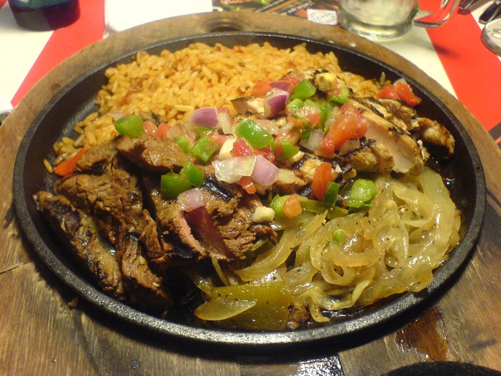
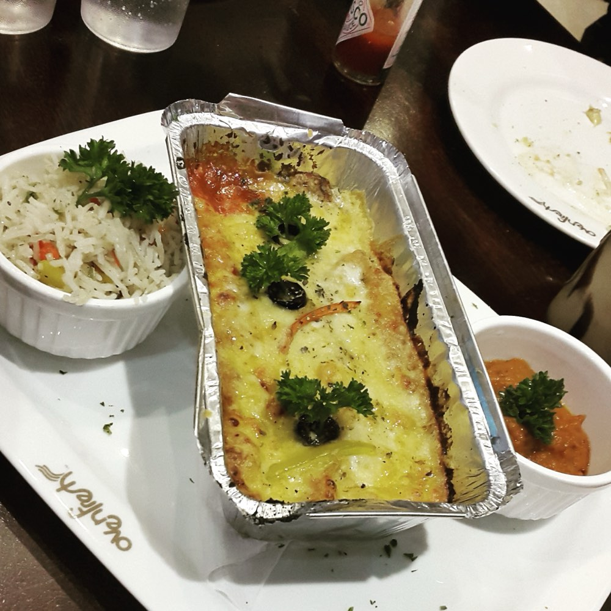
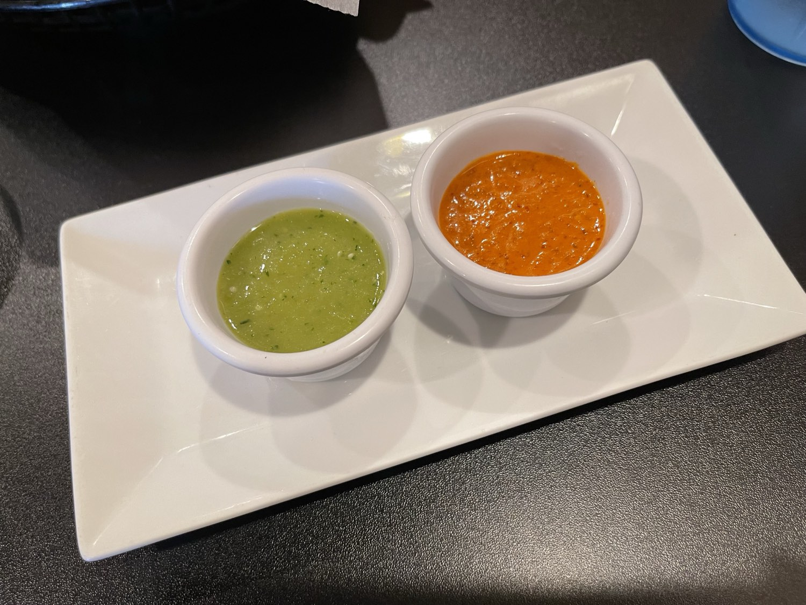

Real Mexican cooking on Salem Road — al pastor off the trompo, sizzling fajitas, enchiladas smothered and cheesy, and margaritas that hit just right. Bienvenidos a la mesa.
Everybody's got a phone, and nobody's got a phone book. When someone in Conway gets a taco craving and googles it, the spot with a real website wins the table. Tap a search — watch where Tio's lands.
This is what a real website does that a Facebook page can't: it puts you at the top when the whole town is searching for exactly what you sell. That's the $79/month working while you're on the line.
Recipes brought north and cooked fresh every day — the way abuela would want it.



Sample photography — the real plates on launch.
Right now every order comes through the phone — and when it's busy, the phone rings out and that order walks to the next taquería. A real site takes the order 24/7, in both languages, and drops it straight to your kitchen.
A note from the guy who built this
I'm Nate — I build websites for local spots here in Central Arkansas.
I built this for Tio's before we ever talked, because the food's clearly loved and yet almost nothing online is helping folks in Conway find you — right now it's a Facebook page.
Here's the whole idea: when somebody in Conway googles "mexican food near me," a real website puts you at the top instead of a Facebook page. That's tables and to-go orders you're not getting right now. Everything marked sample becomes your real photos, menu, and hours.
Live in two or three days. And you don't pay me a dime until it's up and you love it.
The whole build: your website, your Google profile fixed so you rank for "mexican food Conway," and a bilingual assistant that answers hours & directions 24/7.
Hosting, updates, and we keep your Google sharp with fresh photos, reviews & posts every month. Cancel anytime.
Because it's already about 80% built — you're looking at it.
You don't pay until it's live and you love it. I build it, you look it over, and only then do we talk money. You keep the site and the domain either way. There's no risk to you — that's the whole point.